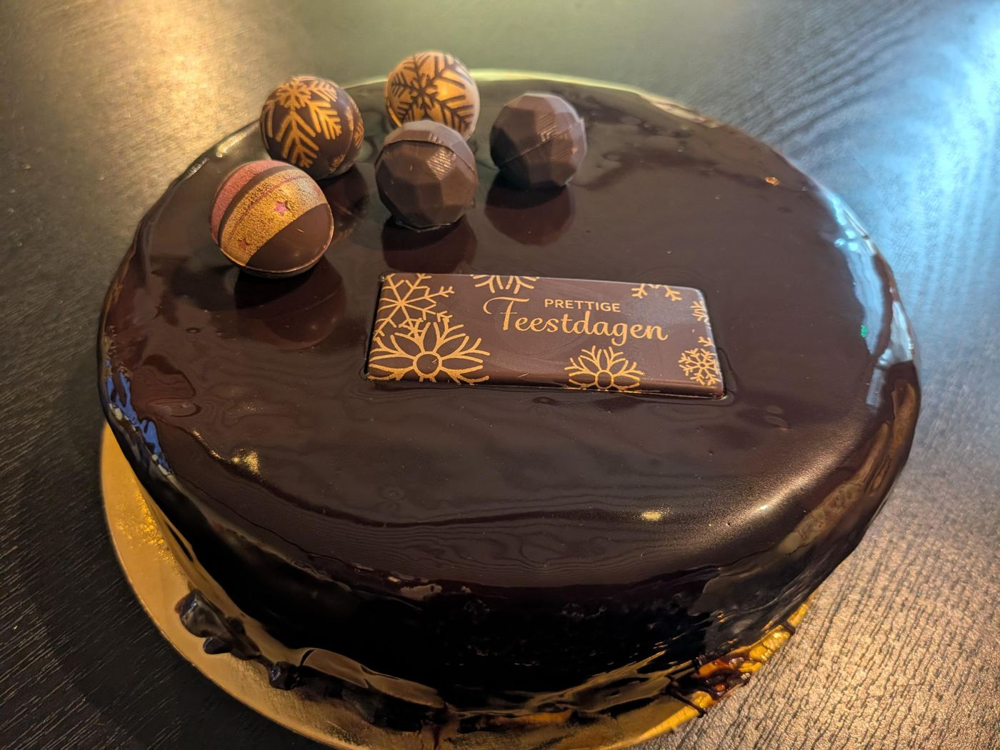

IJsstronk of feestijstaart voor de feestdagen
Ambachtelijke ijsstronken (bûches), een ronde feestijstaart en stronkjes voor één persoon. Er zijn ook vegan en suikerarme opties.
Bestellen kan tot en met zondag 6 december. Afhalen tussen 19 en 31 december.
Zo stel je je ijstaart samen
Je kiest alles zelf in onze webshop. Wij maken ze zelf en zetten ze klaar tegen je afhaaldag.
-
Kies de vorm en grootte
Rond of langwerpig, voor een klein gezelschap of een feest tot 10 personen.
-
Kies je smaken
Combineer twee smaken uit ons assortiment, of kies er één. Er zijn altijd vegan en suikerarme smaken bij.
-
Kies afwerking en bodem
Een spiegel of meringue erop, en een krokante bodem eronder als je dat lekker vindt.
-
Vertel ons wat je viert
Verjaardag, communie of jubileum: vermeld het bij je bestelling, dan versieren we je taart voor die gelegenheid.
-
Kies je afhaaldag en betaal
Bestel minstens twee weken op voorhand en betaal meteen online. Je krijgt een bevestiging van ons.
-
Haal je taart af in Rijmenam
In een stevige taartdoos, tijdens de openingsuren. Neem een koeltas mee en zet de taart thuis meteen in de diepvries.
Voor je je taart komt halen
- Waar
- In onze zaak, Lange Dreef 9 in Rijmenam, tijdens de openingsuren.
- Aansnijden
- Zet je taart een kwartiertje voor het aansnijden in de koelkast. Zo snijdt ze mooi en proef je de smaak het best.
- Allergieën
- Bekijk onze allergenenlijst of laat het ons weten bij je bestelling.
- Dringend of iets speciaals?
- Bel ons op 0469 72 58 29 of kom langs. Vaak is er meer mogelijk.
Wat je misschien nog wil weten
Hoe lang op voorhand moet ik een ijstaart bestellen?
Bestel minstens twee weken op voorhand. Is het dringender? Bel ons op 0469 72 58 29, vaak is er meer mogelijk.
Kunnen jullie de ijstaart versieren voor een verjaardag?
Ja. Vermeld de gelegenheid bij je bestelling, dan decoreren we je ijstaart speciaal voor die dag.
Hebben jullie een vegan of suikerarme ijstaart?
Ja. Er zijn altijd vegan en suikerarme smaken, en ook een vegan bodem. In de webshop zie je bij elke smaak of hij vegan is.
Hoe bewaar ik de ijstaart?
Neem een koeltas mee en zet de taart thuis meteen in de diepvries. Zet ze een kwartiertje voor het aansnijden in de koelkast.
Waar haal ik de ijstaart af?
In onze zaak aan de Lange Dreef 9 in Rijmenam, tijdens de openingsuren. Vanuit Bonheiden, Keerbergen, Boortmeerbeek, Putte of Mechelen ben je er snel.
Een ijstaart voor je feest?
Verjaardag, communie, familiefeest of gewoon zondag: stel je taart samen en haal ze af in Rijmenam.